The Professional Women’s Hockey League was founded in 2023. Rising from the rubble of the Canadian Women's Hockey League and Premier Hockey Federation, the PWHL became North America’s first unified hockey league for women.
At the league’s first game on New Year’s Day 2024, over 2,500 fans crowded into a small Toronto arena to see Toronto and New York face off. The venue was at 99.92% capacity. Retired Canadian right-wing and current PWHL Executive Vice President of Hockey Operations Jayna Hefford walked on to center ice alongside tennis superstar Billie Jean King for the ceremonial puck drop.
Since then, the league’s popularity has skyrocketed. In the past three seasons of regular play, the PWHL has seen steady attendance growth.
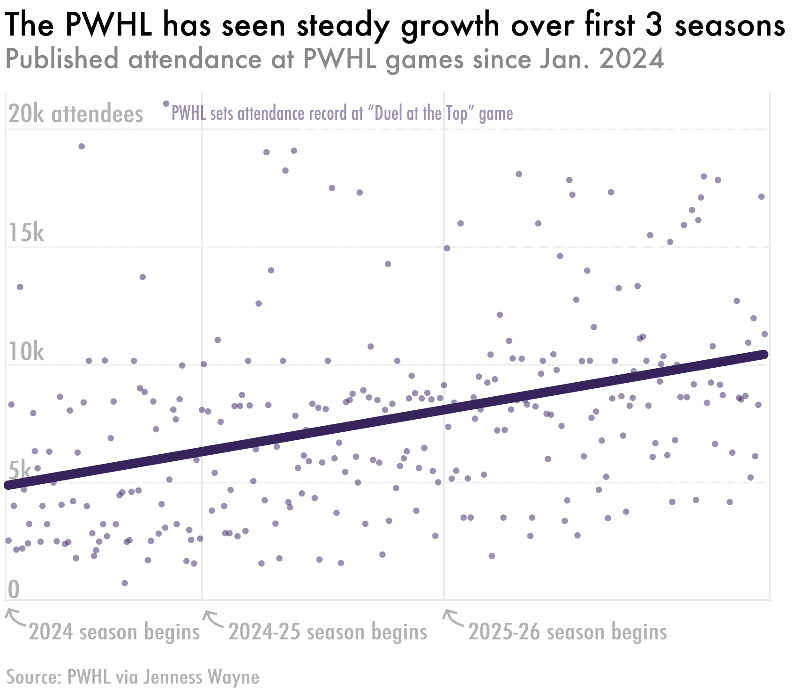
In a Tuesday news release, the PWHL announced that over the course of 120 regular season games, there were 1,116,497 fans in attendance. This marked a near doubling from last season’s approximately 650,000 cumulative attendance.
Starting in the 2024-25 season, the PWHL launched its “Takeover Tour” — a series of games that take matchups to arenas across the country. On average, takeover games saw over 10,000 fans, compared to about 7,000 at non-takeover games.
At each “Takeover Tour” game, one of the PWHL’s eight teams is randomly assigned as the “home team.”
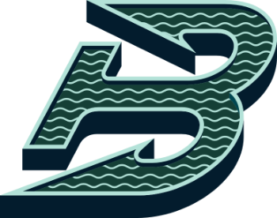
There’s the Boston Fleet — led by Team USA’s 2026 Winter Olympic golden-goal-scorer Megan Keller and goalkeeper Aerin “Green Monster” Frankel.
The Minnesota Frost — back-to-back winners of the PWHL playoffs’ “Walter Cup.”
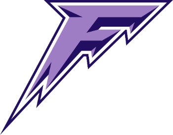
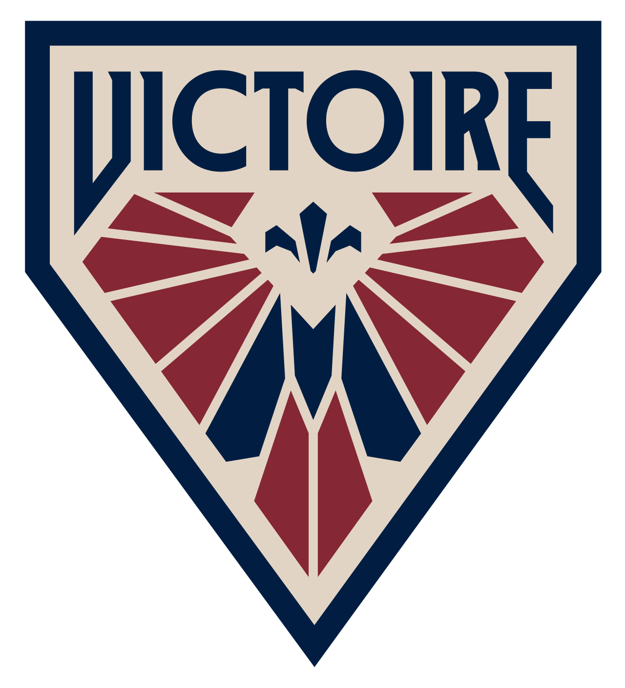
The Montreal Victoire — home to Team Canada’s shining star Marie-Philip Poulin (also known as MPP) and her wife and co-captain Laura Stacey.
The Ottawa Charge, Toronto Sceptres and New York Sirens round out the PWHL’s inaugural six teams.
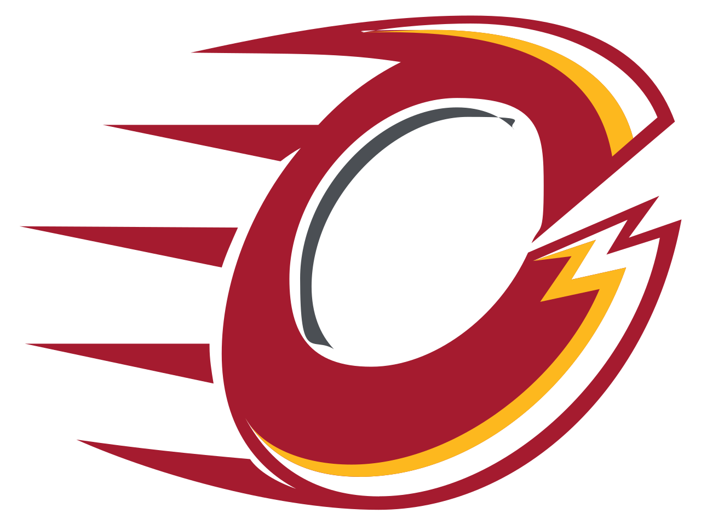
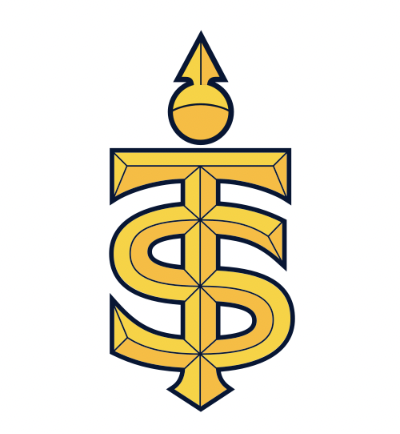
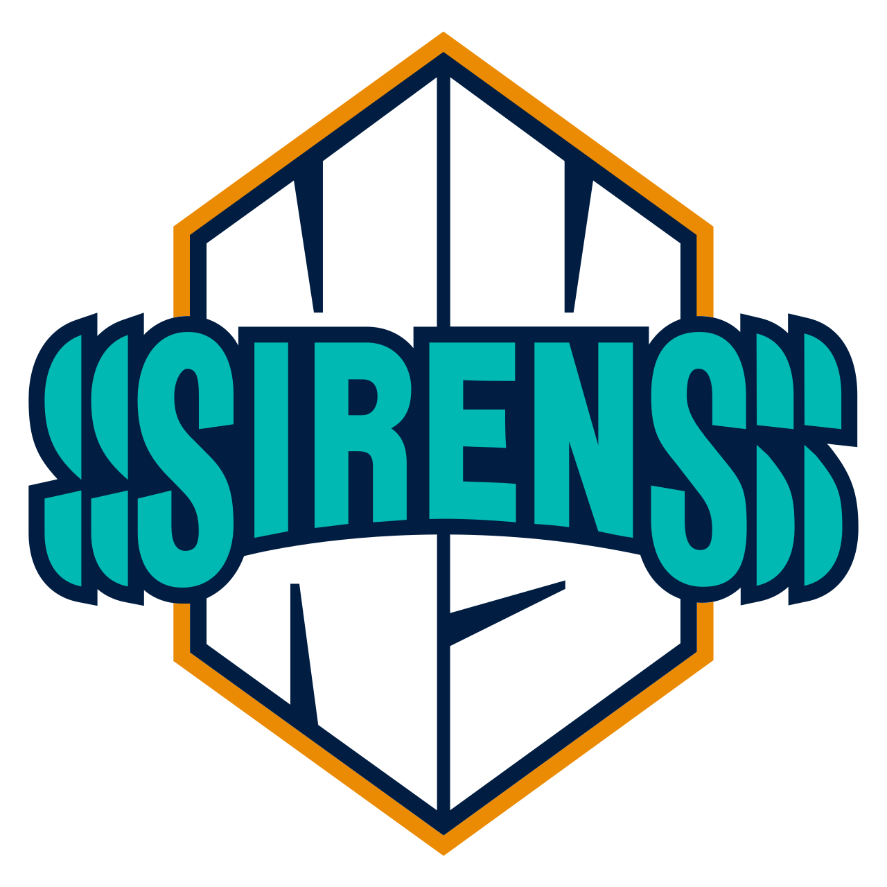
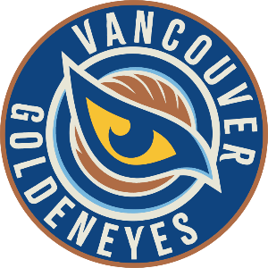
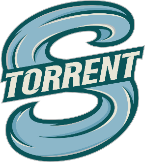
Then there’s the Vancouver Goldeneyes and Seattle Torrent — the PWHL’s two expansion teams, introduced at the start of the 2025-26 season.
At home games, though, the eight teams aren’t created equal. While the six original teams have seen steady growth, this season’s huge uptick in attendance has been primarily driven by the Goldeneyes and Torrent.
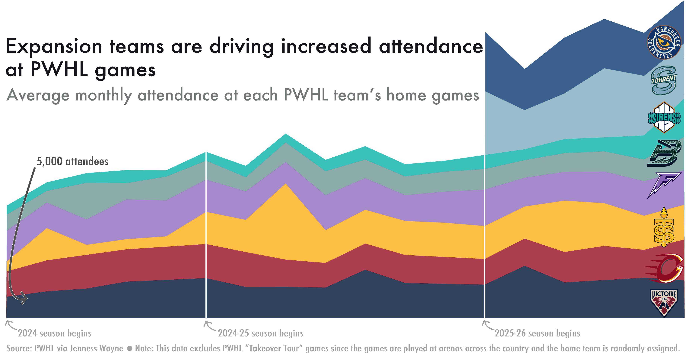
The Goldeneyes were the first team in the league to be the primary tenant at their home arena. The team’s Pacific Coliseum arena was first built in 1968 and can hold about 17,500 total attendees.
The Torrent, meanwhile, plays at the Climate Pledge Arena, which opened in 2021 and is also home to the NHL’s Seattle Kraken. It can fit over 18,000 people.
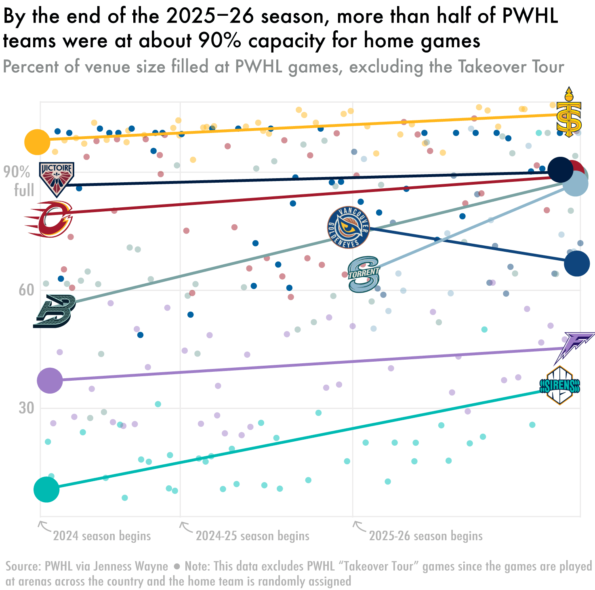
When looking at percent of the venue filled at each game, the Torrent and Goldeneyes have hovered around the middle of the pack during their first seasons. The Sceptres, whose current home arena has a capacity of about 9,000, consistently take the lead — their stands have been more than 90% full at every single home game.
At this point, Boston, Seattle, Toronto, Montreal and Ottawa are all averaging approximately 90% attendance at their home games.
While four of these cities have incredibly popular NHL teams, Seattle stands out as a notable exception — proving that the strength of a city’s NHL team also isn’t an indicator of how strong its fan base will be.
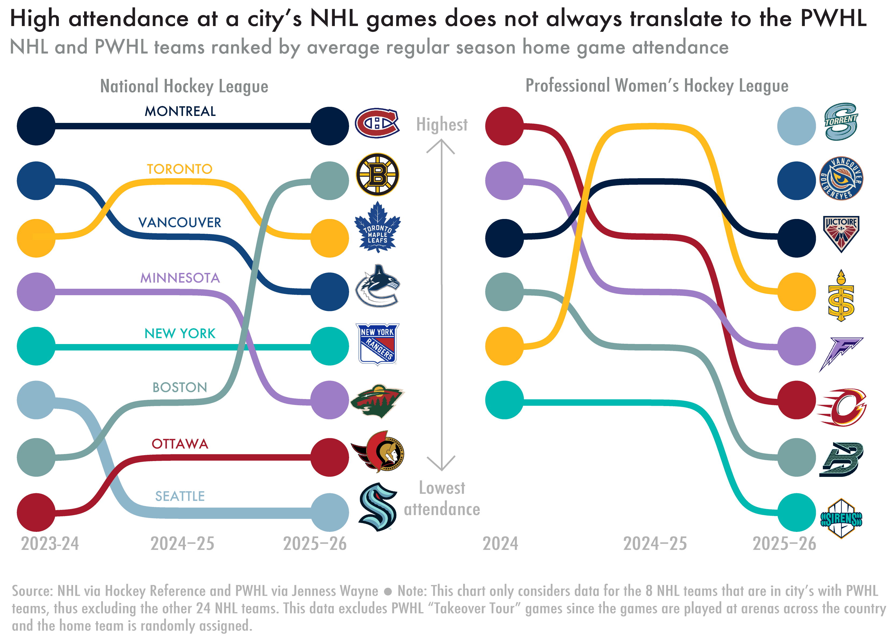
At some Takeover Tour games, between 40 and 80% of attendees had never been to an NHL game before. Of the PWHL’s founding five sponsorship partners, three are not on the NHL’s 75-brand-deep sponsor list.
If this season proves anything, it is that this league is growing.
And it can stand on its own.
This website was created as a project for DATA 1500: "Data Visualization & Narrative" at Brown University with Prof. Reuben Fischer-Baum.
The NHL data was compiled by Hockey Reference. I downloaded each team's data for each of the past three seasons, totalling to 24 seperate csv files. To get each file, you can go to www.hockeyreference.com/teams/[NHL TEAM'S 3 LETTER ABBREVIATION]/[YEAR]_games.html. Share and export as an Excel workbook and convert to CSV.
The PWHL data was scraped from the PWHL website by PWHL fans, led by Jenness Wayne. The downloadable Google Sheet is available here.
All data analysis was conducted using R version 4.4.1. Visualizations were polished in Adobe Illustrator. The opening illustration was made in Procreate. All team logos were pulled from Wikimedia Commons.